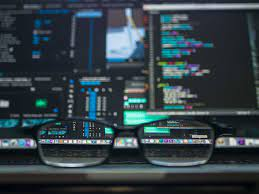
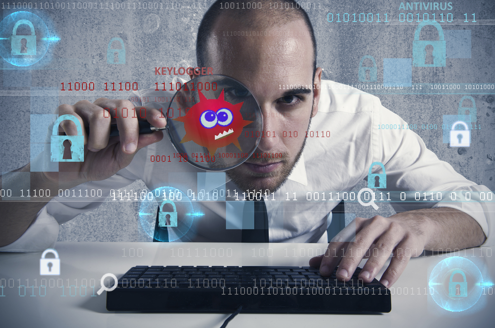

DOUVON Angélot
La sécurité informatique
est essentielle pour prévenir les attaques et les tentatives,
Comme l’hameçonnage, le vol d’informations, les failles de sécurité et la destruction de biens.
Tous les appareils tels que les tablettes et les smartphones sont de plus en plus menacés, car ils stockent désormais plus de données publiques et privées que la plupart des ordinateurs.
En raison de l’augmentation exponentielle des cyberattaques l’année dernière, la plupart des entreprises et des particuliers subiront des interruptions de service et des vols de données.
Technologies utilisées :
LINUX, WINDOWS, JOHN THE RIPPER, Wireshark, NMAP, BEEF, METASPLOIT, FAT THE RAT, SHOWDAN, RECON-NG ...
NB :
Il existe encore beaucoup d'autres outils de piratage que nous ne pouvons pas tous citer
Pourquoi la sécurité informatique est-elle nécessaire pour les appareils intelligents ?
|
Le hacker (aussi appelé « black hat » ou « black hacker »), cherche à profiter des failles de sécurité du système informatique d’une entreprise pour la rançonner ou lui nuire. Face à ce personnage sans foi ni loi, il existe son gentil jumeau, le hacker éthique, expert en cybercriminalité. Son but ? Hacker un système de sécurité pour en détecter les failles et en avertir l’entreprise. C'est ce type de hacker que nous sommes, nous sommes des hackers éthique « white hat ». |
|
|  |
|  | |
|
L’analyste SOC (security operation center) a pour mission la surveillance du système d’information d’une entreprise au sens large afin de détecter toutes les activités suspectes ou malveillantes.
Il/elle intervient aussi en amont pour faire de la prévention.
|